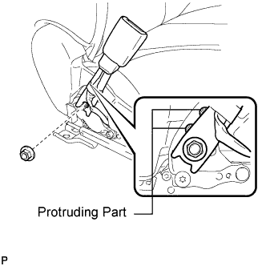

FRONT SEAT INNER BELT ASSEMBLY > INSTALLATION |
| 1. INSTALL FRONT SEAT INNER BELT ASSEMBLY (for Manual Seat) |
 |
Install the front seat inner belt assembly with the nut.
Connect the connectors and attach the clamps.
| 2. INSTALL FRONT SEAT INNER BELT ASSEMBLY (for Power Seat) |
 |
Install the front seat inner belt assembly with the nut.
Connect the connectors and attach the clamps.
| 3. INSTALL FRONT SEAT ASSEMBLY (for Manual Seat) |
Install the front seat assembly (Click here).
| 4. INSTALL FRONT SEAT ASSEMBLY (for Power Seat) |
Install the front seat assembly (Click here).
| 5. CONNECT CABLE TO NEGATIVE BATTERY TERMINAL |
| 6. CHECK SRS WARNING LIGHT |
Check the SRS warning light (Click here).
| 7. INSPECT FRONT SEAT ASSEMBLY |
for Manual Seat:
Inspect Front Seat (Click here).
for Power Seat:
Inspect Front Seat (Click here).